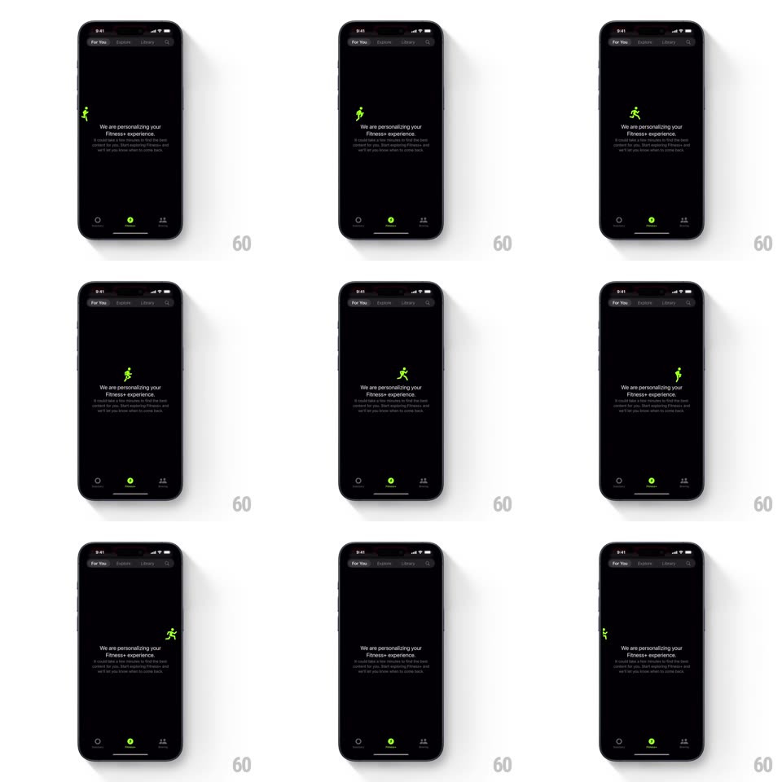

Media
Frame-by-frame

Rebuild this interaction 1:1: Apple Fitness+ personalization empty state - a small green running-figure icon dashes back and forth across a dark screen above a static "We are personalizing your Fitness+ experience." message, looping until content loads.

Rebuild this interaction 1:1: Apple Fitness+ personalization empty state - a small green running-figure icon dashes back and forth across a dark screen above a static "We are personalizing your Fitness+ experience." message, looping until content loads.
## Integration
Integration: stack-agnostic spec - springs given as stiffness/damping, timed motions as duration + curve; map every value to your framework and animation library of choice.
## Scene
Dark screen with the Fitness+ segmented tabs ("For You", Explore, Library, search) at top. Centered message block: "We are personalizing your Fitness+ experience." with a smaller gray explainer paragraph. Bottom tab bar (Activity rings, Fitness+ highlighted green, Sharing). A small green running-person glyph is the only moving element.
## Motion spec
Pattern: looping traversal loader.
- The runner glyph crosses the message area horizontally: enters from the left edge, runs to the right edge (~1.4s, ease-in-out), flips horizontally, and runs back (~1.4s). Loop repeats with no pause.
- Vertical position stays fixed at the message block's headline height; the glyph bobs slightly (translateY +/-3px at ~6Hz) to read as running strides.
- Text, tabs, and tab bar are static; no skeleton shimmer, no spinner.
## Calibration
- The flip at each edge is instant (one frame); a rotated turn reads as sliding.
- Constant-speed crossing with only a light ease - the charm is the simplicity.
## Reduced motion
Static runner glyph centered above the message; no traversal.
## Don't miss
- The glyph uses the Fitness+ green and mirrors direction at each edge.
- Nothing else on the screen animates - no pulsing text or loading spinner.